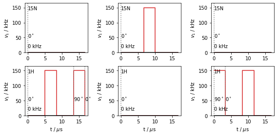
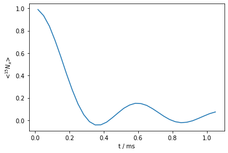
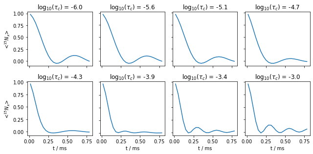

REDOR
Contents
REDOR#

# SETUP pyDR
import os
os.chdir('../..')
import SLEEPY as sl
import numpy as np
import matplotlib.pyplot as plt
from time import time
ex0=sl.ExpSys(v0H=600,Nucs=['15N','1H'],vr=60000,pwdavg=sl.PowderAvg('bcr20'),n_gamma=30)
# After varying the powder average and n_gamma, a beta-average and 30 gamma angles seems sufficient
# The beta-only average may not be valid for slower motion (??)
delta=sl.Tools.dipole_coupling(.102,'15N','1H')
phi=35*np.pi/180
S=-1/2+3/2*np.cos(phi)**2
ex0.set_inter('dipole',i0=0,i1=1,delta=delta)
ex,kex=sl.Tools.Setup3siteSym(ex0,tc=1e-9,phi=phi)
L=sl.Liouvillian(ex,kex=kex)
v1=150e3 #100 kHz pulse
tp=1/v1/2 #pi/2 pulse length
t=[0,L.taur/2-tp,L.taur/2,L.taur-tp,L.taur]
first=L.Sequence().add_channel('1H',t=t,v1=[0,v1,0,v1],phase=[0,0,0,np.pi/2,0])
t=[0,tp,L.taur/2,L.taur/2+tp,L.taur]
second=L.Sequence().add_channel('1H',t=t,v1=[v1,0,v1,0],phase=[np.pi/2,0,0,0,0])
center=L.Sequence().add_channel('15N',t=[0,L.taur/2-tp/2,L.taur/2+tp/2,L.taur],
v1=[0,v1,0])
rho=sl.Rho('15Nx','15Nx')
fig,ax=plt.subplots(2,3)
first.plot(ax=ax.T[0])
center.plot(ax=ax.T[1])
second.plot(ax=ax.T[2])
fig.set_size_inches([8,4])
fig.tight_layout()

Ucenter=center.U()
Ufirst=first.U()
Usecond=second.U()
rho=sl.Rho('15Nx','15Nx')
U1=L.Ueye()
U2=L.Ueye()
t0=time()
for k in range(32):
rho.reset()
(U2*Ucenter*U1*rho)()
U1=Ufirst*U1
U2=Usecond*U2
print(time()-t0)
25.911766052246094
ax=rho.plot()

Reducible sequence#
The above sequence is computationally expensive, requiring a basis set of 48 elements. If we consider that we’re mainly interested in the \(S^+\) operator of the \(^{15}\)N spin, then its worth noting that the \(^{15}\)N \(\pi\)-pulse in the middle of the sequence converts \(S^+\) into \(S^-\), \(S^\alpha\), and \(S^\beta\), so that if we could get rid of it, we could use a basis set 1/4 as big (12 elements). Since there is no isotropic \(^{15}\)N shift included, we can switch the channel of the middle pulse to \(^1\)H. An alternative approach would be to use a \(\delta\)-pulse on \(^{15}\)N, although the basis set would then only be reduced to 24 elements, since \(S^+\) would still be converted to \(S^-\)
centerH=L.Sequence().add_channel('1H',t=[0,L.taur/2-tp/2,L.taur/2+tp/2,L.taur],v1=[0,v1,0])
rho=sl.Rho('15Np','15Nx')
rho,f,s,c,Ueye=rho.ReducedSetup(first,second,centerH,L.Ueye())
State-space reduction: 48->12
Ufirst=f.U()
Usecond=s.U()
Ucenter=c.U()
U1=Ueye
U2=Ueye
t0=time()
for k in range(32):
rho.reset()
(U2*Ucenter*U1*rho)()
U1=Ufirst*U1
U2=Usecond*U2
print(time()-t0)
43.55854678153992
rho.plot()
<AxesSubplot:xlabel='t / ms', ylabel='<$^{15}N_x$>'>
Sweep the correlation time#
rho_list=[]
legend=[]
t0=time()
for tc in np.logspace(-6,-3,8):
L.kex=sl.Tools.nSite_sym(n=3,tc=tc)
t=[0,L.taur/2-tp,L.taur/2,L.taur-tp,L.taur]
first=L.Sequence().add_channel('1H',t=t,v1=[0,v1,0,v1],phase=[0,0,0,np.pi/2])
t=[0,tp,L.taur/2,L.taur/2+tp,L.taur]
second=L.Sequence().add_channel('1H',t=t,v1=[v1,0,v1,0],phase=[0,0,np.pi/2,0])
centerH=L.Sequence().add_channel('1H',t=[0,L.taur/2-tp/2,L.taur/2+tp/2,L.taur],v1=[0,v1,0])
rho_list.append(sl.Rho('15Np','15Nx'))
rho_list[-1],f,s,c,Ueye=rho_list[-1].ReducedSetup(first,second,centerH,L.Ueye())
Ufirst=f.U()
Usecond=s.U()
Ucenter=c.U()
U1=Ueye
U2=Ueye
for k in range(24):
rho_list[-1].reset()
(U2*Ucenter*U1*rho_list[-1])()
U1=Ufirst*U1
U2=Usecond*U2
legend.append(fr'$\log_{{10}}(\tau_c)$ = {np.log10(tc):.1f}')
print(f'log10(tc /s) = {np.log10(tc):.1f}, {time()-t0:.0f} seconds elapsed')
State-space reduction: 48->12
log10(tc /s) = -6.0, 42 seconds elapsed
State-space reduction: 48->12
log10(tc /s) = -5.6, 82 seconds elapsed
State-space reduction: 48->12
log10(tc /s) = -5.1, 121 seconds elapsed
State-space reduction: 48->12
log10(tc /s) = -4.7, 161 seconds elapsed
State-space reduction: 48->12
log10(tc /s) = -4.3, 200 seconds elapsed
State-space reduction: 48->12
log10(tc /s) = -3.9, 239 seconds elapsed
State-space reduction: 48->12
log10(tc /s) = -3.4, 278 seconds elapsed
State-space reduction: 48->12
log10(tc /s) = -3.0, 316 seconds elapsed
fig,ax=plt.subplots(2,4)
ax=ax.flatten()
for a,l,r in zip(ax,legend,rho_list):
r.plot(ax=a)
a.set_title(l)
if not(a.is_first_col()):
a.set_ylabel('')
a.set_yticklabels([])
if not(a.is_last_row()):
a.set_xlabel('')
a.set_xticklabels([])
fig.set_size_inches([9,4.5])
fig.tight_layout()
